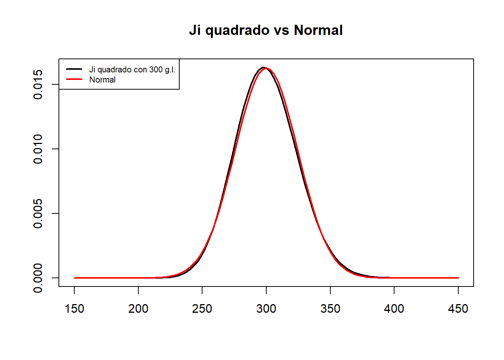
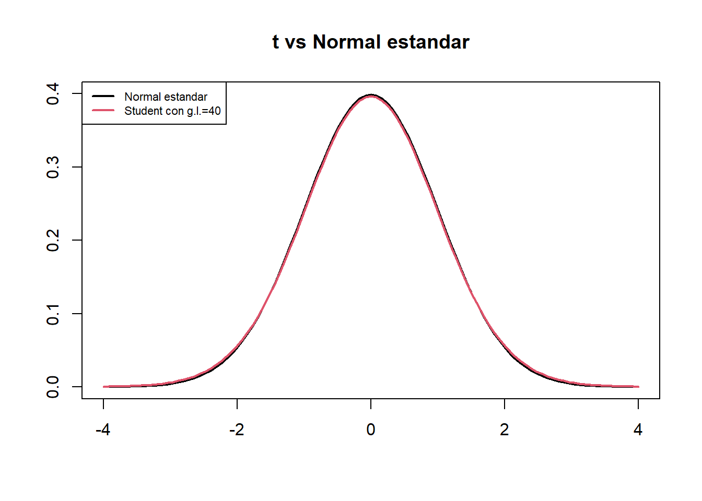

6 Estimadores
En un problema típico de estadística inferencial:
Queremos conocer el valor de una característica en el total de una población, pero no podemos medir esta característica en todos los individuos de la población.
Entonces, extraemos una muestra de la población, medimos la característica en los individuos de esta muestra, calculamos algo con los datos obtenidos e inferimos el valor de la característica en el global de la población.
Inmediatamente surgen varias preguntas, que responderemos entre esta lección y la próxima:
- ¿Cómo tiene que ser la muestra?
- ¿Qué tenemos que calcular?
- ¿Con qué precisión podemos inferir la característica de la población?
¿Qué tipo de muestra tenemos que tomar? Vamos a suponer de ahora en adelante que tomamos muestras aleatorias simples. Esto incluye las muestras aleatorias sin reposición si la población es mucho más grande que la muestra, ya que entonces no hay diferencia práctica entre permitir y prohibir las repeticiones. En algunos casos muy concretos permitiremos muestras aleatorias sin reposición en general.
Tip
Sí, ya sabemos que en la práctica casi nunca tomamos muestras aleatorias, sino oportunistas. En este caso, lo que hay que hacer es describir en detalle las características de la muestra para justificar que, pese a no ser aleatoria, es razonablemente representativa de la población y podría pasar por aleatoria.
¿Qué calculamos? Pues un estimador: alguna función adecuada aplicada a los valores de la muestra, y que dependerá de lo que queramos estimar. Por ejemplo:
Si queremos estimar la altura media de los estudiantes de la UIB, tomaremos una muestra aleatoria de estudiantes de la UIB, mediremos sus alturas y calcularemos su media aritmética.
Si queremos estimar la proporción de estudiantes de la UIB que usan lentillas, tomaremos una muestra aleatoria de estudiantes de la UIB y calcularemos la proporción en esta muestra de los que las usan.
Importante
Un estimador es una variable aleatoria, definida sobre la población formada por las muestras de la población de partida. Por lo tanto, tiene función de densidad, función de distribución, esperanza, desviación típica, etc.
6.1 La media muestral
Cuando queremos estimar el valor medio de una variable sobre una población, tomamos una muestra de valores y calculamos su media aritmética, ¿verdad? Pues eso es la media muestral.
Dada una variable aleatoria \(X\), llamamos media muestral de (muestras de) tamaño \(n\) a la variable aleatoria \(\overline{X}\) “Tomamos una muestra aleatoria simple de tamaño \(n\) de \(X\) y calculamos la media aritmética de sus valores”.
Veamos algunas propiedades de la distribución de \(\overline{X}\):
Teorema: Sea \(X\) una variable aleatoria cualquiera de media \(\mu_X\) y desviación típica \(\sigma_X\), y sea \(\overline{X}\) la media muestral de tamaño \(n\) de \(X\). Entonces:
\(E(\overline{X})=\mu_X\)
\(\sigma(\overline{X})=\dfrac{\sigma_X}{\sqrt{n}}\)
Formalmente, la media muestral de tamaño \(n\) de una variable aleatoria \(X\) se define como la variable aleatoria \[ \overline{X}=\frac{X_1+\cdots+X_n}{n} \] donde \(X_1,\ldots,X_n\) son \(n\) copias independientes de la variable \(X\).
Entonces, por la linealidad de la esperanza \[ E(\overline{X})=\frac{E(X_1)+\cdots+E(X_n)}{n}=\frac{n\cdot \mu_X}{n}=\mu_X \] porque, como \(X_1,\ldots,X_n\) son copias de \(X\), \(E(X_1)=\cdots=E(X_n)=\mu_X\).
Y por la “linealidad” de la varianza de la suma de variables independientes \[ \sigma(\overline{X})^2=\frac{\sigma(X_1)^2+\cdots+\sigma(X_n)^2}{n^2}=\frac{n\cdot \sigma_X^2}{n^2}=\frac{\sigma_X^2}{n} \] porque, de nuevo, como \(X_1,\ldots,X_n\) son copias de \(X\), \(\sigma(X_1)^2=\cdots=\sigma(X_n)^2=\sigma_X^2\).
Que \(E(\overline{X})\) sea \(\mu_X\) nos indica que \(\overline{X}\) sirve para estimar \(\mu_X\), porque su valor esperado es \(\mu_X\):
Si calculáramos muchas medias de muestras aleatorias de \(X\), es muy probable que, de media, obtuviéramos un valor muy cercano a \(\mu_X\).
Cuando el valor esperado de un estimador es precisamente el parámetro poblacional que se quiere estimar, se dice que el estimador es insesgado. Así, el primer punto del teorema anterior dice que la media muestral \(\overline{X}\) es un estimador insesgado de la media poblacional \(\mu_X\).
Que \(\sigma(\overline{X})\) sea \(\sigma_X/\sqrt{n}\) implica que la variabilidad de las medias muestrales crece con la variabilidad de \(X\) y decrece si tomamos muestras de mayor tamaño. Esto último es razonable. Aunque la variabilidad de \(X\) sea grande, si tomamos muestras grandes, es de esperar que los valores extremos se compensen al calcular sus medias y que estas últimas tengan por lo tanto menos variabilidad que la variable \(X\) original.
A \(\sigma_X/\sqrt{n}\) se le llama el error típico de la media muestral (para la variable aleatoria \(X\) y muestras de tamaño \(n\)).
Nota
La pestaña Teorema Central del Límite del módulo Demonstration de JAMOVI os permite experimentar cómo muestras de diferentes tamaños de medias muestrales de diferentes tamaños y de diferentes distribuciones poblacionales se aproximan más o menos a una distribución normal. Por ejemplo, para 1000 medias de muestras de tamaño 40 de una binomial:
Teorema: Si \(X\) es \(N(\mu_X,\sigma_X)\), entonces \(\overline{X}\) es \(N(\mu_X,\sigma_X/\sqrt{n})\).
Si \(X\) no es normal, sigue siendo cierto que \(\overline{X}\) es “aproximadamente” normal siempre y cuando \(n\) sea grande. Este es uno de los más importantes en estadística y el motivo de la importancia de la distribución normal.
Teorema Central del Límite: Sea \(X\) una variable aleatoria cualquiera de esperanza \(\mu_X\) y desviación típica \(\sigma_X\). Si \(n\) es muy grande, \(\overline{X}\) es aproximadamente \(N(\mu_X, {\sigma_X}/{\sqrt{n}})\).
¿Cuándo es una muestra lo bastante grande como para poder invocar el Teorema Central del Límite? En realidad, depende de la \(X\). Cuánto más se parezca \(X\) a una variable normal, más pequeñas pueden ser la muestras. Por fijar un valor, aceptaremos que “muy grande” en este teorema es \(n\geqslant 40\).
- ¿Qué quiere decir que una variable aleatoria sea “aproximadamente” normal? Pues que su función de distribución \(F_X\) toma valores muy cercanos a la función de distribución de una normal. Recordad cómo una \(B(n,p)\) con \(n\) grande era “aproximadamente normal” en el tema anterior.
Importante
En resumen:
Si \(X\) es normal, \(\overline{X}\) es \(N(\mu_X,{\sigma_X}/{\sqrt{n}})\).
Si \(X\) no es normal pero \(n\) es grande (pongamos \(n\geqslant 40\), aunque puede ser menor si \(X\) se parece a una normal y seguramente tendrá que ser mayor si \(X\) es muy diferente de una normal), \(\overline{X}\) es aproximadamente \(N(\mu_X,{\sigma_X}/{\sqrt{n}})\).
Advertencia
Las afirmaciones del bloque anterior son verdaderas para medias muestrales de muestras aleatorias simples. Si no podemos suponer que la muestra sea aleatoria simple, ninguno de los dos resultados es válido.
6.2 La proporción muestral
Cuando queremos estimar la proporción de sujetos de una población que tienen una determinada característica, tomamos una muestra y calculamos la proporción de sujetos de la muestra con esta característica. Esta será la proporción muestral de sujetos con esta característica en nuestra muestra.
Dada una variable aleatoria \(X\) de Bernoulli \(Be(p_X)\), la proporción muestral de (muestras de) tamaño \(n\), \(\widehat{p}_X\), es la variable aleatoria consistente en tomar una muestra aleatoria simple de tamaño \(n\) de \(X\) y calcular la proporción de éxitos en la muestra: es decir, contar el número total de éxitos y dividir el resultado por \(n\).
Fijaos en que \(\widehat{p}_X\) es un caso particular de media muestral \(\overline{X}\): estamos calculando medias muestrales de muestras aleatorias simples de la variable de Bernoulli \(X\). Por lo tanto, todo lo que hemos dicho para medias muestrales vale también para proporciones muestrales:
Teorema: Si \(X\) es una variable aleatoria de Bernoulli con probabilidad poblacional de éxito \(p_X\) y \(\widehat{p}_X\) es la proporción muestral de tamaño \(n\):
\(E(\widehat{p}_X)=p_X\)
\(\sigma({\widehat{p}_X})=\sqrt{\dfrac{p_X(1-p_X)}{n}}\)
Nota
No hace falta invocar que la proporción muestral sea un caso particular de media muestral para obtener el resultado anterior. Si llamamos \(S_n\) a la variable que cuenta el número de éxitos en una muestra aleatoria simple de tamaño \(n\) de la variable de Bernoulli \(X\), entonces, por un lado, tenemos que \(\widehat{p}_X=S_n/n\) y, por otro, que \(S_n\) es \(B(n,p_X)\). Entonces:
\(E(\widehat{p}_X)=E\Big(\dfrac{1}{n}S_n\Big)=\dfrac{1}{n}\cdot E(S_n)=\dfrac{1}{n}\cdot np_X=p_X\)
\(\sigma({\widehat{p}_X})=\sigma\Big(\dfrac{1}{n}S_n\Big)=\dfrac{1}{n}\cdot \sigma(S_n)=\dfrac{1}{n} \sqrt{np_X(1-p_X)}=\sqrt{\dfrac{p_X(1-p_X)}{n}}\)
\(E(\widehat{p}_X)=p_X\) nos dice que \(\widehat{p}_X\) es un estimador insesgado de \(p_X\). Si calculáramos muchas proporciones muestrales de muestras aleatorias de \(X\), es muy probable que, de media, obtuviéramos un valor muy cercano a la proporción poblacional de éxitos \(p_X\).
\(\sigma({\widehat{p}_X})=\sqrt{\dfrac{p_X(1-p_X)}{n}}\) nos dice que, fijada la variable \(X\), si tomamos muestras de tamaño mayor, la variabilidad de los resultados de \(\widehat{p}_X\) disminuye.
Si tomamos muestras aleatorias simples de tamaño \(n\) de una variable aleatoria Bernoulli \(X\):
\(\sqrt{\dfrac{p_X(1-p_X)}{n}}\) es el error típico de la variable aleatoria \(\widehat{p}_X\): su desviación típica.
Para cada muestra, \(\sqrt{\dfrac{\widehat{p}_X(1-\widehat{p}_X)}{n}}\) es el error típico de la muestra, que estima el error típico de \(\widehat{p}_X\).
Y como la proporción muestral es un caso particular de media muestral, por el Teorema Central del Límite tenemos el resultado siguiente:
Teorema: Si \(n\) es grande y las muestras aleatorias son simples, \(\widehat{p}_X\) es aproximadamente \(N\big (p_X,\sqrt{{p_X(1-p_X)}/{n}}\big)\) y por lo tanto \[ \frac{\widehat{p}_X-p_X}{\sqrt{\frac{{p}_X(1-{p}_X)}{n}}} \] es aproximadamente \(N(0,1)\).
Importante
En el caso de la proporción muestral, a veces vamos a permitir tomar muestras aleatorias sin reposición. En este caso, la variable \(S_n\) que cuenta el número de éxitos en una muestra aleatoria sin reposición de tamaño \(n\) de la variable de Bernoulli \(X\), y que verifica que \(\widehat{p}_X=S_n/n\), es hipergeométrica. De aquí deducimos que seguimos teniendo que \(E(\widehat{p}_X)=p_X\), pero ahora, si \(N\) es el tamaño de la población, \[ \sigma({\widehat{p}_X})=\sqrt{\frac{p_X(1-p_X)}{n}}\cdot \sqrt{\frac{\vphantom{(p_X}N-n}{N-1}}. \] El factor \[ \sqrt{\frac{N-n}{N-1}} \] que transforma \(\sigma({\widehat{p}_X})\) para muestras aleatorias simples en la desviación típica de \({\widehat{p}_X}\) para muestras aleatorias sin reposición es el factor de población finita que transformaba la desviación típica de una variable binomial (que cuenta éxitos en muestras aleatorias simples) en la desviación típica de una variable hipergeométrica (que cuenta éxitos en muestras aleatorias sin reposición).
Tip
Y recordad que si el tamaño de la población \(N\) es muy grande comparado con \(n\), podemos suponer que una muestra aleatoria sin reposición es simple.
6.3 La varianza muestral
Dada una variable aleatoria \(X\), llamamos:
Varianza muestral de (muestras de) tamaño \(n\), \(\widetilde{S}_{X}^2\), a la variable aleatoria consistente en tomar una muestra aleatoria simple de tamaño \(n\) de \(X\) y calcular la varianza muestral de sus valores.
Desviación típica muestral de (muestras de) tamaño \(n\), \(\widetilde{S}_{X}\), a la variable aleatoria consistente en tomar una muestra aleatoria simple de tamaño \(n\) de \(X\) y calcular la desviación típica muestral de sus valores.
Formalmente, estas variables se definen tomando \(n\) copias independientes \(X_1,\ldots,X_n\) de \(X\) y calculando \[ \widetilde{S}_{X}^2=\frac{\sum_{i=1}^n (X_{i}-\overline{X})^2}{n-1},\quad \widetilde{S}_{X}=+\sqrt{\widetilde{S}_{X}^2} \]
Tenemos los dos resultados siguientes. El primero nos dice que \(\widetilde{S}_{X}^2\) es un estimador insesgado de la varianza poblacional \(\sigma_{X}^2\).
Teorema: \(E(\widetilde{S}_{X}^2)=\sigma_{X}^2\).
Por lo tanto, esperamos que la varianza muestral de una muestra aleatoria simple de \(X\) valga \(\sigma_{X}^2\), en el sentido usual de que si tomamos muestras aleatorias simples de \(X\) de tamaño \(n\) grande y calculamos sus varianzas muestrales, muy probablemente obtengamos de media un valor muy cercano a \(\sigma_{X}^2\).
Advertencia
Y por consiguiente NO esperamos que la varianza “a secas” de una muestra aleatoria simple valga \(\sigma_{X}^2\), porque la varianza muestral y la varianza “a secas” dan valores diferentes (tienen el mismo numerador y denominadores diferentes).
El segundo resultado nos dice que si la variable \(X\) es normal, un múltiplo adecuado de \(\widetilde{S}_{X}^2\) tiene distribución conocida, lo que nos permitirá calcular probabilidades de sucesos relativos a \(\widetilde{S}_{X}^2\).
Teorema: Si \(X\) es \(N(\mu_X,\sigma_X)\) y tomamos muestras aleatorias simples de tamaño \(n\), la variable aleatoria \[ \chi^2= \dfrac{(n-1)\widetilde{S}_{X}^2}{\sigma_{X}^2} \] tiene una distribución conocida, llamada ji cuadrado con \(n-1\) grados de libertad, \(\chi_{n-1}^2\).
Tip
La letra griega \(\chi\) en castellano se lee ji; en catalán, khi; en inglés, chi, pronunciado “chai”.
La distribución \(\chi_\nu^2\), donde \(\nu\) es un parámetro llamado sus grados de libertad, es la distribución de probabilidad de la suma de los cuadrados de \(\nu\) copias independientes de una variable normal estándar. Para R es chisq. La tenéis también en el módulo distrACTION.
Os puede interesar recordar que una variable \(\chi_\nu^2\) de tipo ji cuadrado con \(\nu\) grados de libertad:
Tiene valor esperado \(E(\chi_\nu^2)=\nu\) y varianza \(\sigma(\chi_\nu^2)^2=2 \nu\).
Su función de distribución es estrictamente creciente.
Su densidad es asimétrica a la derecha, como muestra el gráfico siguiente:
A medida que el número de grados de libertad \(\nu\) crece, esta asimetría tiende a desaparecer y, por el Teorema Central del Límite, si \(\nu\) es lo bastante grande, la distribución \(\chi_\nu^2\) se aproxima a la de una variable normal \(N(\nu,\sqrt{2\nu})\).

:::{.callout-warning} Tened cuidado:
Si la variable poblacional \(X\) no es normal, la conclusión del Teorema anterior no es verdadera.
Aunque \(X\) sea normal, \(E(\widetilde{S}_{X})\neq \sigma_{X}\). La desviación típica muestral es un estimador sesgado de \(\sigma_{X}\) (pero tiene otras buenas propiedades que hacen que la usemos igualmente).
Ya lo hemos comentado antes. Si \(S^2_{X}\) es la varianza “a secas” (dividiendo por \(n\) en vez de por \(n-1\)), \(E(S^2_{X})\neq \sigma^2_{X}\). De hecho, como \(S_X^2\) se obtiene a partir de \(\widetilde{S}_{X}^2\) cambiando el denominador, \[ S_X^2=\frac{n-1}{n} \widetilde{S}_{X}^2 \] tenemos que \[ E(S_X^2)=\frac{n-1}{n}E(\widetilde{S}_{X}^2)=\frac{n-1}{n}\sigma^2_{X} \]
6.4 La distribución t de Student
Recordad que si la variable poblacional \(X\) es \(N(\mu_X,\sigma_X)\) y tomamos muestras aleatorias simples de tamaño \(n\), entonces \(\overline{X}\) es \(N(\mu_X,\sigma_X/\sqrt{n})\) y por lo tanto, tipificando, la variable \[ \frac{\overline{X}-\mu_X}{\sigma_{X}/\sqrt{n}} \] es normal estándar. Esto no nos sirve de nada para calcular la probabilidad de que \(\overline{X}\) se aleje mucho de \(\mu_X\) si no sabemos la desviación típica poblacional \(\sigma_{X}\), que será lo habitual. ¿Qué pasa si la estimamos por medio de \(\widetilde{S}_{X}\) con la misma muestra con la que calculamos \(\overline{X}\)? Pues que el resultado siguiente nos salva el día, porque la variable que resulta tiene distribución conocida y por lo tanto podemos calcular probabilidades con ella.
Teorema: Sea \(X\) una variable \(N(\mu_X,\sigma_X)\). Si tomamos muestras aleatorias simples de tamaño \(n\), la variable aleatoria \[ T=\frac{\overline{X}-\mu_X}{\widetilde{S}_{X}/\sqrt{n}} \] tiene una distribución conocida, llamada t de Student con \(n-1\) grados de libertad, \(t_{n-1}\).
Al denominador \(\widetilde{S}_{X}/\sqrt{n}\) de la \(T\) del teorema anterior se le llama el error típico de la muestra, y estima el error típico \(\sigma_X/\sqrt{n}\) de la media muestral \(\overline{X}\).
Fijaos en que el teorema anterior es solo para variables poblacionales \(X\) normales. Si \(X\) no es normal, tenemos el resultado siguiente.
Teorema: Sea \(X\) una variable de media \(\mu_X\). Si tomamos muestras aleatorias simples de tamaño \(n\) muy grande, la variable aleatoria \[ T=\frac{\overline{X}-\mu_X}{\widetilde{S}_{X}/\sqrt{n}} \] tiene distribución aproximadamente \(t_{n-1}\).
La distribución t de Student la tenéis también en el módulo distrACTION.
Algunas propiedades que conviene que recordéis de las variables \(T_\nu\) que tienen distribución \(t\) de Student con \(\nu\) grados de libertad, \(t_\nu\):
Su valor esperado es \(E(T_\nu)=0\) y su varianza es \(\sigma(T_\nu)=\dfrac{\nu}{\nu-2}\) (en realidad esto solo es verdad si \(\nu\geqslant 3\), pero no hace falta recordarlo).
Su función de distribución es estrictamente creciente.
Su densidad es simétrica respecto de 0 (como la de una \(N(0,1)\)) y por lo tanto \[ P(T_\nu\leqslant -x)=P(T_\nu\geqslant x)=1-P(T_\nu\leqslant x) \]
Si \(\nu\) es grande (digamos, de nuevo, \(\nu\geqslant 40\)), \(T_\nu\) es aproximadamente una \(N(0,1)\) (pero con un poco más de varianza, porque \(\nu/(\nu-2)>1\), y por consiguiente un poco más achatada).


Denotaremos por \(t_{\nu,q}\) el \(q\)-cuantil de una variable aleatoria \(T_{\nu}\) con distribución \(t_\nu\). Es decir, \(t_{\nu,q}\) es el valor tal que \[ P(T_{\nu}\leqslant t_{\nu,q})=q \] Entonces:
Por la simetría de la densidad de \(T_{\nu}\), \[ t_{\nu,q}=-t_{\nu,1-q}. \] Exactamente lo mismo que pasaba con la normal estándar
Si \(\nu\) es grande, \(T_\nu\) será aproximadamente una \(N(0,1)\) y por lo tanto \(t_{\nu,q}\) es aproximadamente igual a \(z_q\).
Advertencia
No confundáis:
Desviación típica de una variable aleatoria: El parámetro poblacional, normalmente desconocido. Es \(\sigma_X\).
Desviación típica (muestral o no) de una muestra: El estadístico que calculamos sobre la muestra. Es \(\widetilde{S}_X\) (la muestral) o \({S}_X\) (la “a secas”).
Error típico de la media muestral: La desviación típica de la variable \(\overline{X}\). Es \(\sigma_X/\sqrt{n}\), con \(n\) el tamaño de las muestras.
Error típico de una muestra: Estimación del error típico de \(\overline{X}\) a partir de la muestra. Es \(\widetilde{S}_X/\sqrt{n}\), con \(n\) el tamaño de la muestra.
Fijaos en que el denominador \(\sqrt{n}\) hace que, en general, los errores típicos sean mucho más pequeños que las desviaciones típicas. Id con cuidado, porque esto se usa a menudo en artículos para enmascarar los resultados. Si una muestra ha salido con una dispersión muy grande, se da su error típico en vez de su desviación típica y parece que ha salido más concentrada.